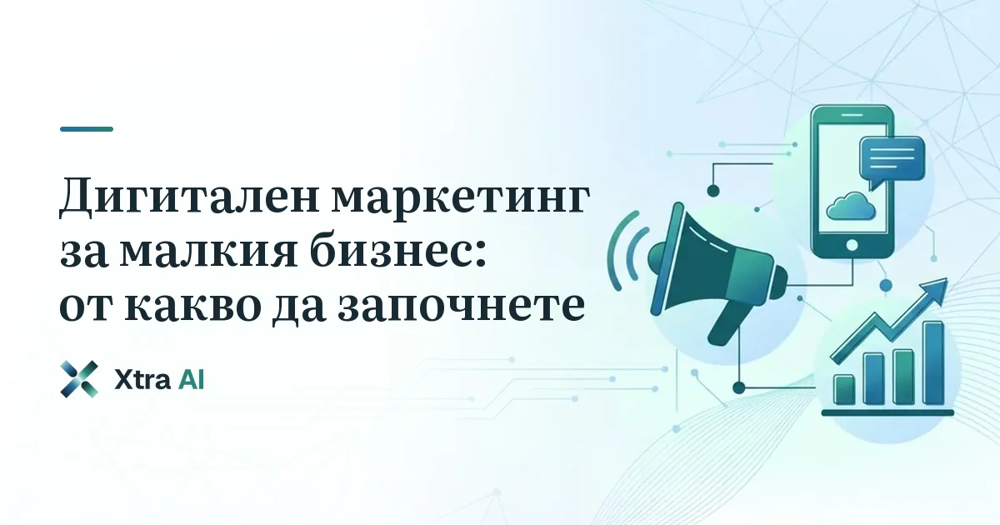
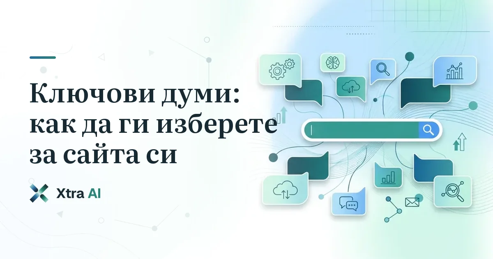
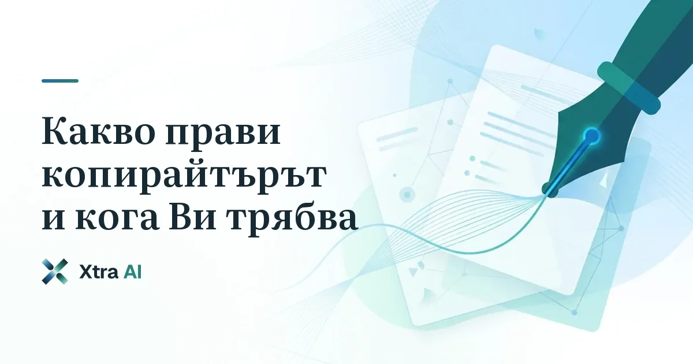
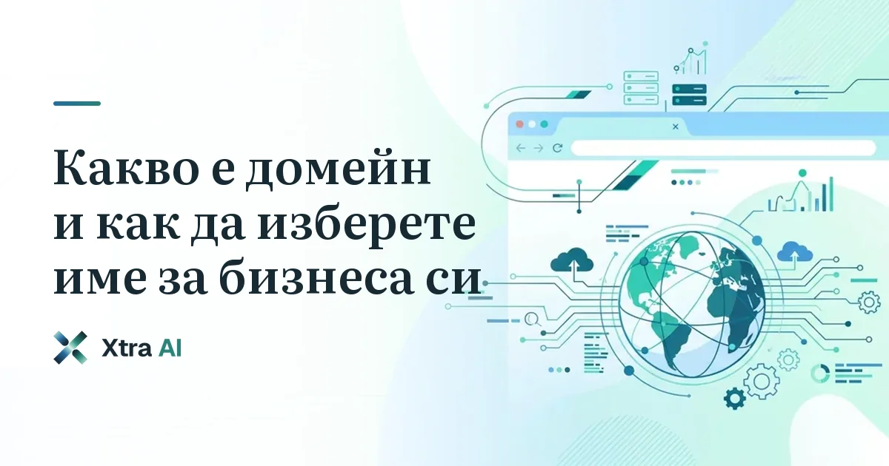

Последна статия
SEO и Google7 мин четене
Режим с AI в Google: какво е и какво означава за бизнеса Ви
Какво е режимът с AI в Google, как показва връзки към сайтове и какво може да направи малкият бизнес, за да е информацията му ясна и вярна.
AI и автоматизации, SEO, съдържание и реклама, обяснени с ясни думи и конкретни стъпки.
Последна статия
SEO и Google7 мин четене
Какво е режимът с AI в Google, как показва връзки към сайтове и какво може да направи малкият бизнес, за да е информацията му ясна и вярна.


Маркетинг и реклама

AI и автоматизации

Маркетинг и реклама
AI и автоматизации6 мин четене
Как да използвате ChatGPT в работата на малкия бизнес: първи стъпки, полезни задачи, проверка на отговорите и какво да не поставяте в разговора.
SEO и Google7 мин четене
Какво е режимът с AI в Google, как показва връзки към сайтове и какво може да направи малкият бизнес, за да е информацията му ясна и вярна.
SEO и Google7 мин четене
Какво означава SEO, как Google намира страниците и как малкият бизнес да започне с ясен план, без да вярва на обещания за позиции.

SEO и Google6 мин четене
Как да създадете, заявите и потвърдите Google бизнес профил и какво да проверявате в него всеки месец, включително отговорите на оценки и коментари.

SEO и Google6 мин четене
Как да откриете думите, с които клиентите Ви търсят, да изберете една основна дума за страница и да я използвате естествено.
Маркетинг и реклама6 мин четене
Как да подредите бизнес презентация за клиент, партньор или екип, какви слайдове работят и какво да проверите, когато AI подготви първата версия.
Маркетинг и реклама7 мин четене
Кои онлайн канали да изберете за малкия бизнес, в какъв ред да ги започнете и как да разберете кой от тях носи запитвания.
Маркетинг и реклама6 мин четене
Какво е лого, кои са основните видове и какви качества и файлове трябва да има, за да работи на сайта, в социалните мрежи и на табелата.

Маркетинг и реклама5 мин четене
Какво означава маркетинг за малкия бизнес, какво е моделът 4P и как да направите проста стратегия и месечен план, които можете да следите.
Маркетинг и реклама7 мин четене
Кои социални мрежи подхождат на различните видове малък бизнес, как да изберете една или две и как да ги поддържате редовно.

Маркетинг и реклама6 мин четене
Какво прави копирайтърът, какви текстове пише за малкия бизнес, как да му подготвите задание и как да прецените дали е подходящ за Вас.

Сайт и онлайн магазин7 мин четене
Какво е домейн, с какво се различава от хостинга, как да изберете име и окончание и защо домейнът трябва да е на Вашия бизнес.

Документи и управление6 мин четене
Какво трябва да съдържа фактурата според ЗДДС, какво са стоковата разписка и кредитното известие и как да издавате фактурите по-бързо.
Тук ще намерите практични съвети за собственици на малък бизнес. Статиите показват как да използвате изкуствен интелект (AI) и автоматизации в ежедневната работа, как сайтът Ви да се показва по-добре в Google (SEO) и как да планирате съдържанието и рекламата си. Всяка статия обяснява темата с ясни думи и с конкретни стъпки, които можете да приложите сами. Ако искате да обсъдим Вашия бизнес, можете да започнете с безплатна диагностика.
Диагностиката не Ви обвързва с нищо. Показваме Ви точно какво можем да поправим и колко ще струва.